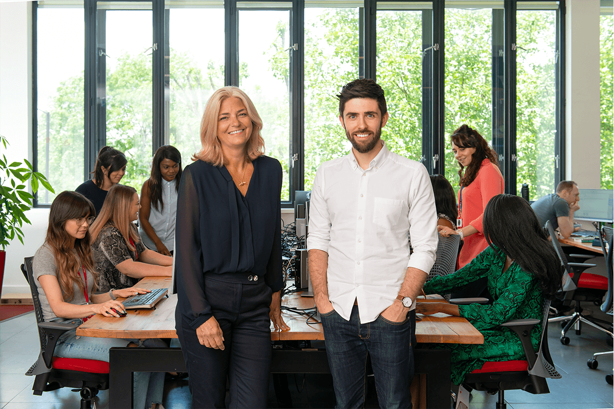

Companies
Virgin is entrepreneurial at its heart, having spent the last 50 years starting
and scaling businesses around the world. In 2013, Virgin StartUp was
founded by Richard Branson to support the next generation of founders
who are looking to do the same.
As a not-for-profit, we work to empower founders to not only start-up and
survive, but thrive. By providing business advice, access to funding,
mentoring and a growing community, we’re helping thousands of founders
to change business for good.
Businesses funded by Virgin StartUp survive longer, generate higher
turnover and hire more people than businesses supported by other start-up
support organisations in the UK. We have an unrelenting focus on the
founders that we exist to support and look to use the platform and network
we have, to help them thrive.
Currently only one in five start-ups in the UK has a woman founder – we
think that’s something that needs to change. In 2019 we became the first
start-up support organisation to pledge equal funding for men and women
with our 50:50 pledge.
We passionately believe in entrepreneurship and want to support any
founder who has an ambition to start and scale an early stage business. One
that adds value to them, to their community and to the economy more
broadly. We’re open to working with founders across any industry, whether
they’re looking to start a lifestyle business or have ambitions for a high
growth venture.
Find out more at Virgin StartUp.
